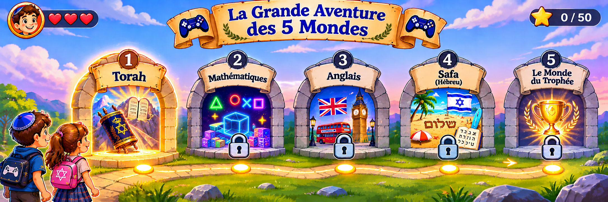

🎮 Notre jeu vidéo
Un jeu imaginé et créé par les enfants avec Tal !
Sur téléphone, utilise les boutons. Le mode paysage offre plus de place.

❤️ ❤️ ❤️
⭐ 0 / 50
Déplace les personnages sur le chemin. Devant Torah, appuie sur W (fille) ou ↑ (garçon) pour entrer. Les autres portails sont verrouillés.
Monde 1 — Torah
Traverse le désert ! Saute sur les plateformes et avance jusqu’au bout.
Ce monde sera ajouté lors d’un prochain atelier.
Maintiens une flèche pour avancer. Tu peux avancer et sauter en même temps !